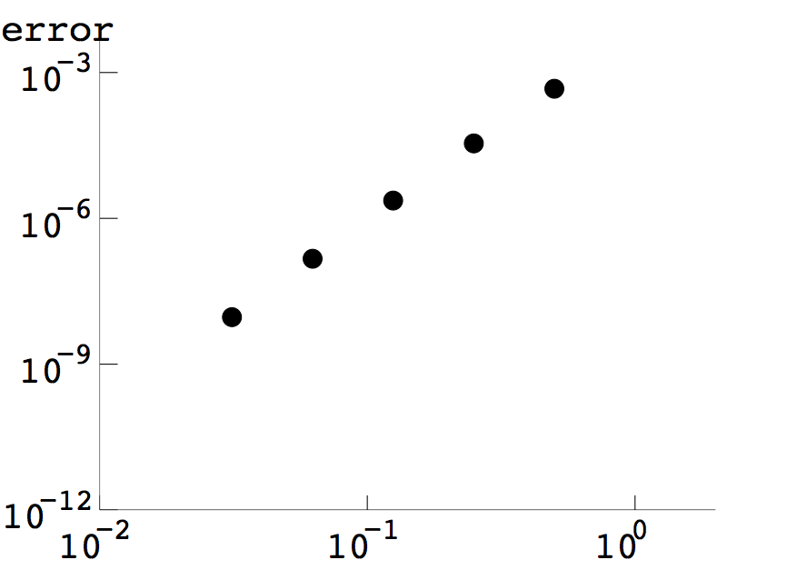
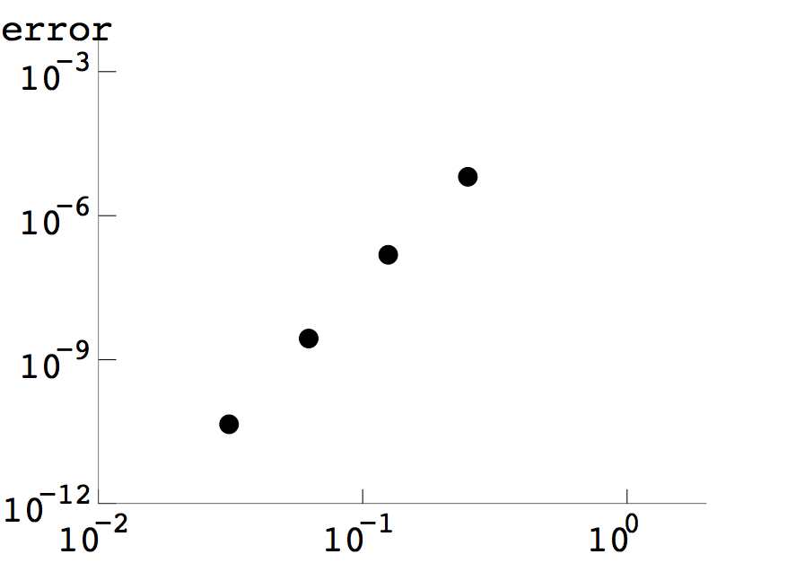

\(\begin{array}{crcl} &\text{exact}&R_{55}&\ \ \ \ \text{error}\\ \text{(a)}&2.00000000&2.00000010&1.00\times10^{-7}\\ \text{(b)}&(1-\ln 2)/2 \approx 0.15342641&0.15342640&1.23\times10^{-8}\\ \text{(c)}&1.00000000&1.00000000&3.50\times10^{-13}\\ \text{(d)}&9\ln 3-26/9\approx 6.99862171&6.99862171&3.00\times10^{-9}\\ \text{(e)}&\pi^2-4\approx5.86960440&5.86960486&4.56\times10^{-7}\\ \text{(f)}&2\sqrt{5}-\sqrt{15}/2\approx2.53564428&2.53564428&1.21\times10^{-10}\\ \text{(g)}&\ln(\sqrt{3}+2)\approx1.31695790&1.31695765&2.46\times10^{-7}\\ \text{(h)}&\ln(\sqrt{2}+1)/2\approx0.44068679&0.44068686&6.98\times10^{-8}\\ \end{array}\)
>> (2*np.log(2)-1)-romberg(np.log,1,2,6) ans = 0.03972077083992 0.38629436111989 0.38629436111989 0.01027501192582 0.00045975895446 0.38629436111989 0.00259485171045 0.00003479830532 0.00000646759538 0.00065045116780 0.00000231765358 0.00000015227679 0.00016272337502 0.00000014744410 0.00000000276347 0.00004068778692 0.00000000925756 0.00000000004512The errors of the second column \(R_{22},\ldots,R_{62}\) are plotted in the left figure below versus the values of \(h = 2^{-1},\ldots,2^{-5}\). The slope is approximately \(4\), showing that the error \(\propto h^4\) as expected.
3 (b) We use the data from part (a). The errors of the third column of the Romberg triangle are plotted in the right figure. The slope is approximately \(6\), consistent with the error \(\propto h^6\) in the third column.

